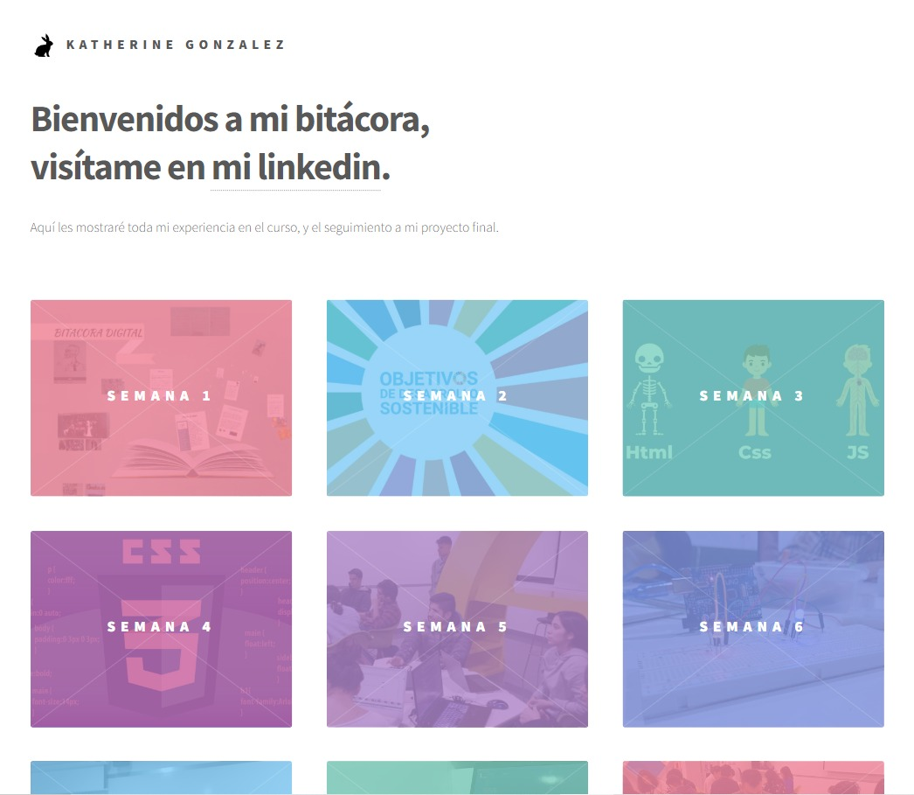

¿Por qué escogí esta plantilla?
 La elección de esta plantilla para realizar mi bitácora, fue en base por los botones, la organización, lo colorido de la página que lo relacione con mi forma de ser. ademas me permitia jugar con muchas más funcionalidades desde el element.html, de los cuales agregue los botones de siguiente y anterior, para que las semanas tengan un hilo conductor, ademas me permitia agregar sites mucho más dinámicos que se deslizan desde la parte lateral derecha. Gracias a esta plantilla, llegue mostrar de manera adecuada mi proceso durante el curso y el gusto que tengo por el dinamismo, la creatividad, y la buena organización.